Values in Action: Late Capitalism A Survival Guide Wes Cecil · Wes Cecil ·Dec 31, 2025 · 13 min read · Economics 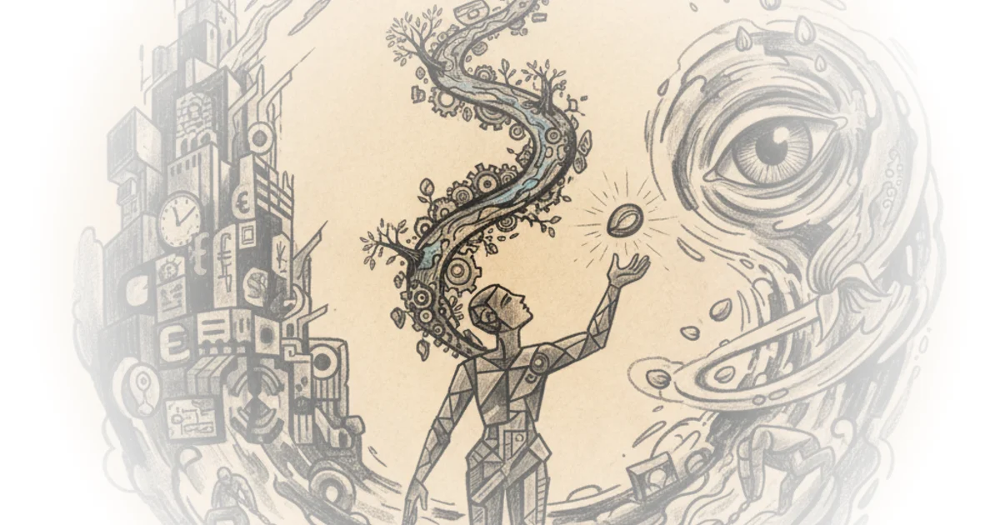
Highlights From The Comments On Vibecession Scott Alexander · Astral Codex Ten ·Dec 30, 2025 · 46 min read · Culture
The Continuous Creative Act of Holding on and Letting Go: 10 Beautiful Minds on the Art of Growing Older Maria Popova · The Marginalian ·Dec 29, 2025 · 11 min read · Culture 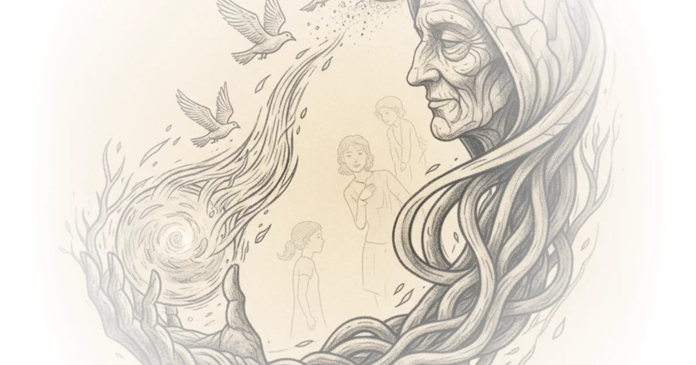
The End of Ethics: Late Capitalism a Survival Guide Wes Cecil · Wes Cecil ·Dec 29, 2025 · 43 min read · Economics
The Problems with Causality: Reding Beyond Good and Evil Wes Cecil · Wes Cecil ·Dec 25, 2025 · 23 min read 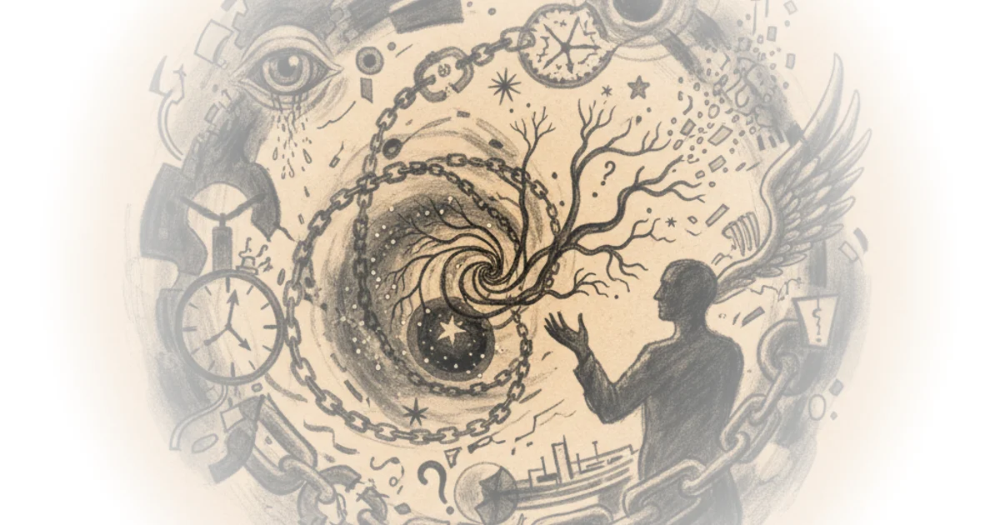
Wow - Friction as Financialized Profit: Late Capitalism a Survival Guide Wes Cecil · Wes Cecil ·Dec 24, 2025 · 11 min read · Economics 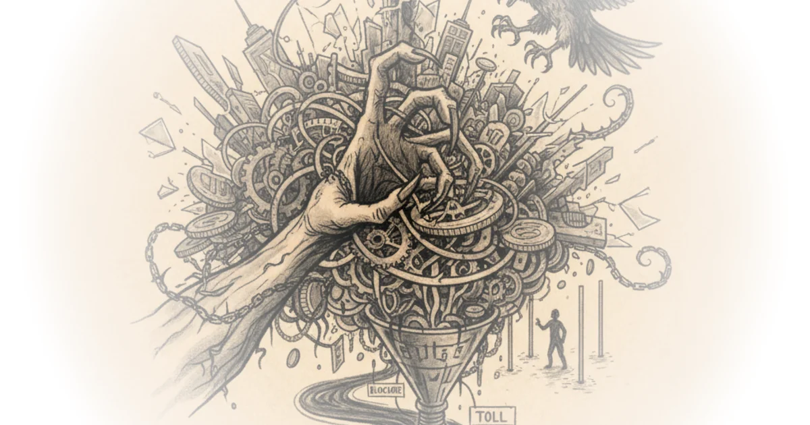
The Shape of Artificial Intelligence Alberto Romero · The Algorithmic Bridge ·Dec 22, 2025 · 29 min read · AI & Tech
Spotify and the Death of Culture: Late Capitalism a Survival Guide Wes Cecil · Wes Cecil ·Dec 22, 2025 · 47 min read · Economics
Against Against Boomers Scott Alexander · Astral Codex Ten ·Dec 19, 2025 · 11 min read · Culture 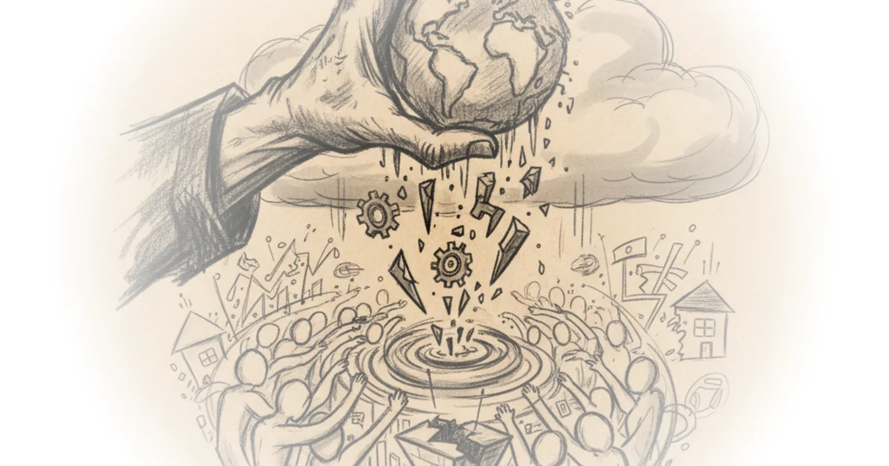
New Book, Founding Member Perks, and Hegelian Dialectics with Myself Richard Hanania · ·Dec 19, 2025 · 22 min read 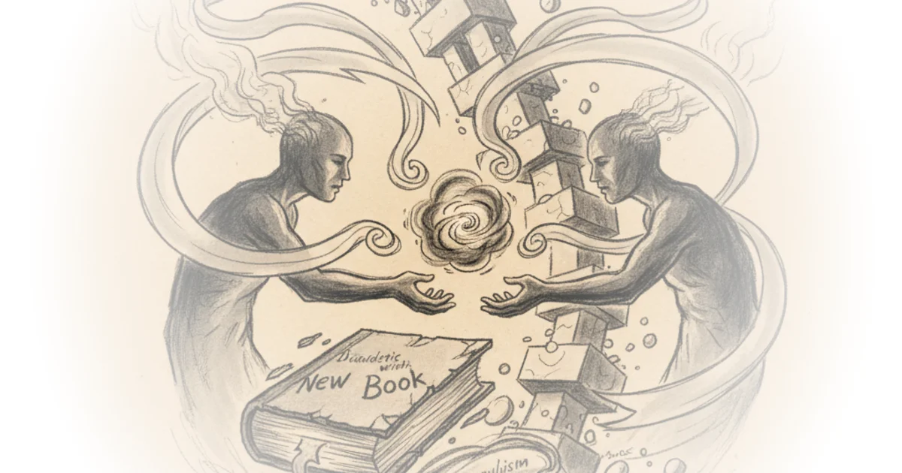
Neither Free Will nor not Free Will: Reading Beyond Good and Evil 6 Wes Cecil · Wes Cecil ·Dec 19, 2025 · 28 min read
The Woman Who Mapped Labrador and Revolutionized the Literature of Exploration Maria Popova · The Marginalian ·Dec 18, 2025 · 16 min read · Culture
Elves on shelves and social media bans Jacqueline Nesi · Techno Sapiens ·Dec 18, 2025 · 10 min read · AI & Tech
I Liked the Essay. Then I Found Out It Was AI Alberto Romero · The Algorithmic Bridge ·Dec 16, 2025 · 12 min read · AI & Tech 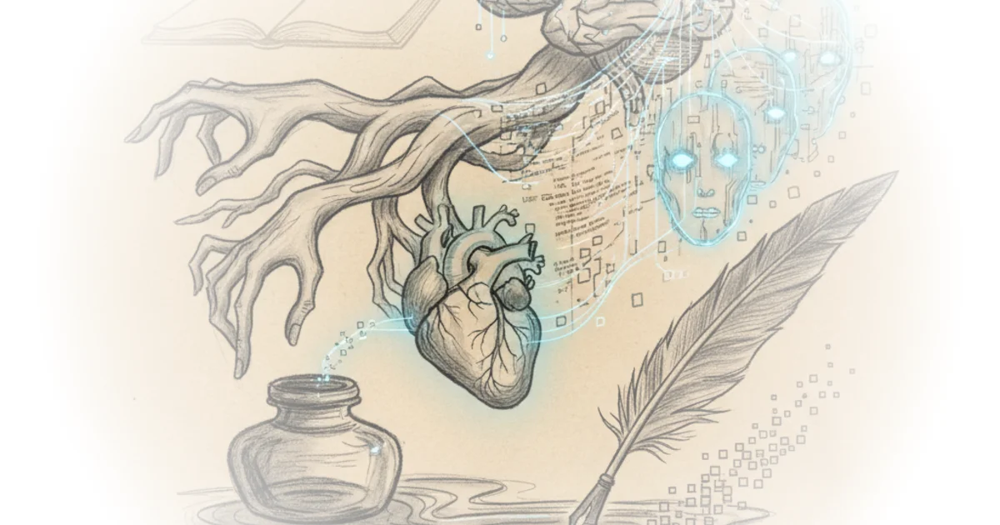
Curtis Yarvin Says We Can't Handle the Truth Ben Burgis · Philosophy for the People ·Dec 14, 2025 · 25 min read 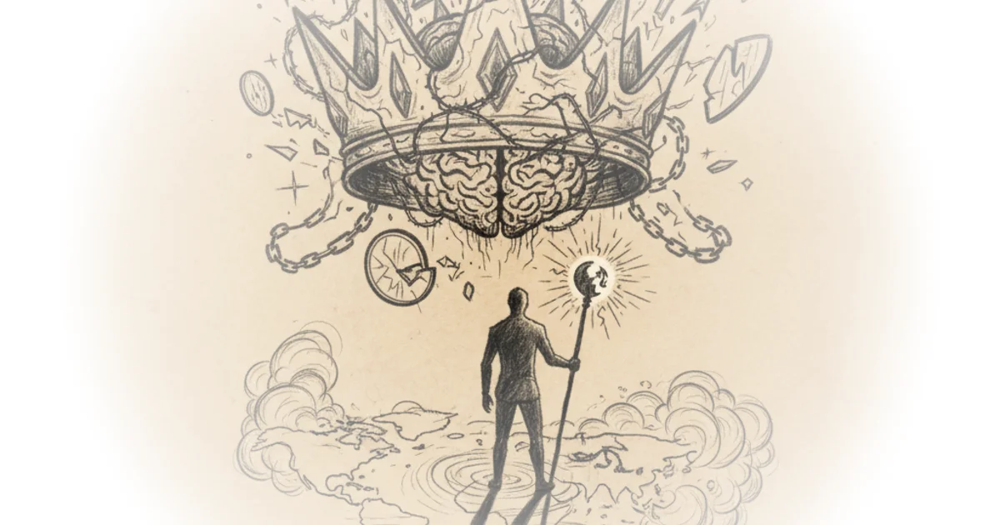
America's epistemological crisis (reprise) Dan Williams · Conspicuous Cognition ·Dec 14, 2025 · 25 min read · Science
QUANTUM PHYSICS NEEDS PHILOSOPHY, BUT SHOULDN'T TRUST IT Slavoj Žižek · ŽIŽEK GOADS AND PRODS ·Dec 10, 2025 · 13 min read · Science 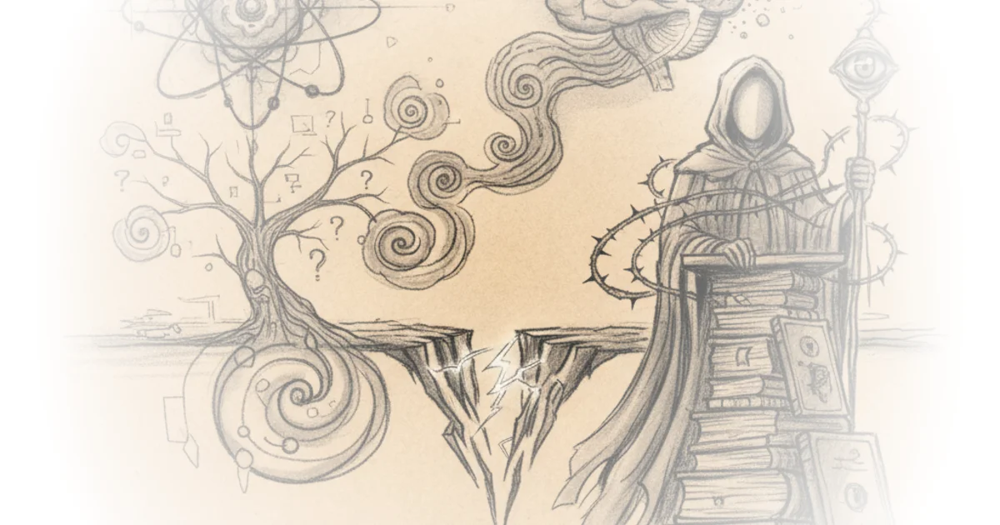
Three Mistakes in “Three Mistakes in the Moral Mathematics of Existential Risk” Bentham's Bulldog · ·Dec 7, 2025 · 15 min read 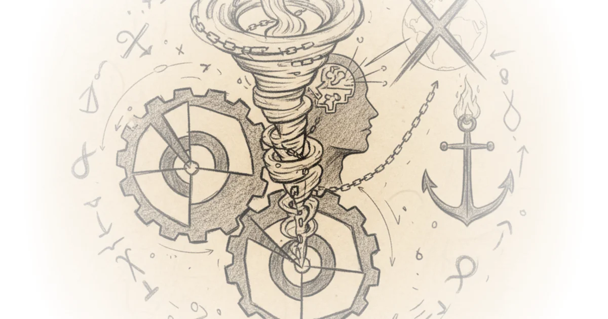
Are Service Workers and Public Sector Employees Part of the Proletariat? Ben Burgis · Philosophy for the People ·Dec 7, 2025 · 25 min read 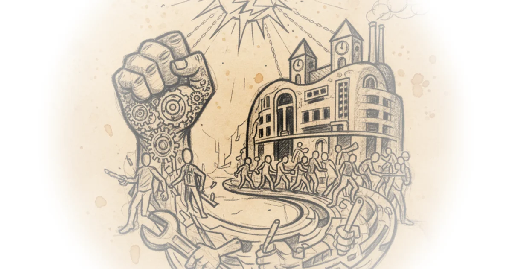
VERSIONS OF ABJECT: UGLY, CREEPY, DISGUSTING (PART TWO) Slavoj Žižek · ŽIŽEK GOADS AND PRODS ·Dec 6, 2025 · 12 min read